We are the Dombazyan family – members of the SDA Church in the village of Medovo. Motivated by the Bible and the Spirit of prophecy we left the city and with much prayer and God’s mercy we built our home and very soon the Lord motivated us to build a school. With God’s help and with the help of many brothers and sisters we continue to work for the salvation of our children.
 will be added soon
will be added soon
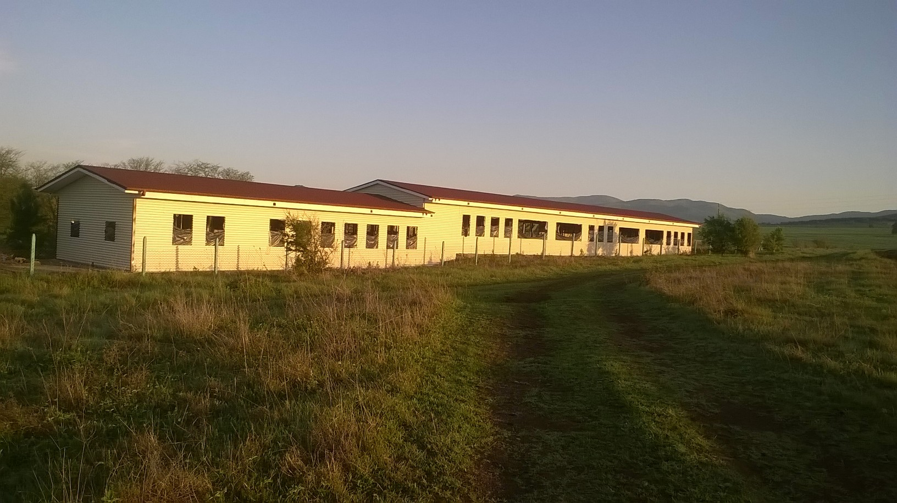
"Beloved Child" school
Our Mission
Our purpose is the harmony and beauty in nature to infuse into the relationship between students and their teachers.
We dream to achieve, in collaboration with parents, the most difficult but also the most important task ever entrusted to the man –
to educate and teach the youth the Christian values so that they would become helpful members of the society -
young people who love the good, are moral and pure, honor the elderly and help those in need.
We would like to teach them not only to read and write but also to love as they have been loved - by their parents, teachers and classmates,
to succeed in life, finding paths to human hearts and giving out the love with which they themselves have been filled.
This would be the mission of "Beloved Child" school.
The Project
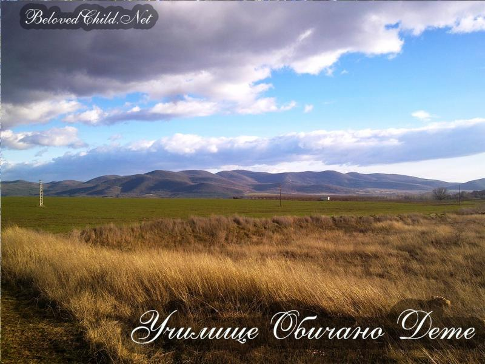
Location
It is situated in a lovely countryside in the skirts of the picturesque village of Medovo in the foot of Sredna Gora mountains. It stands at 50 km northwest of the city of Plovdiv and 60 km west of the city of Stara Zagora – far from the polluted air of the cities, from the noise and stress of the busy schedules.
“Get out of the cities as soon as possible. Establish church schools.”

Nature
Encompassed by the hills of Sredna Gora - in the four directions there are mountains, hills, forests, streams and fields. A beautiful panorama, quietness and fresh air.
There will be also flower alleys and ornamental trees - clean and pretty!
Children love animals so we will make sure they could befriend some animals in a special tiny zoo.
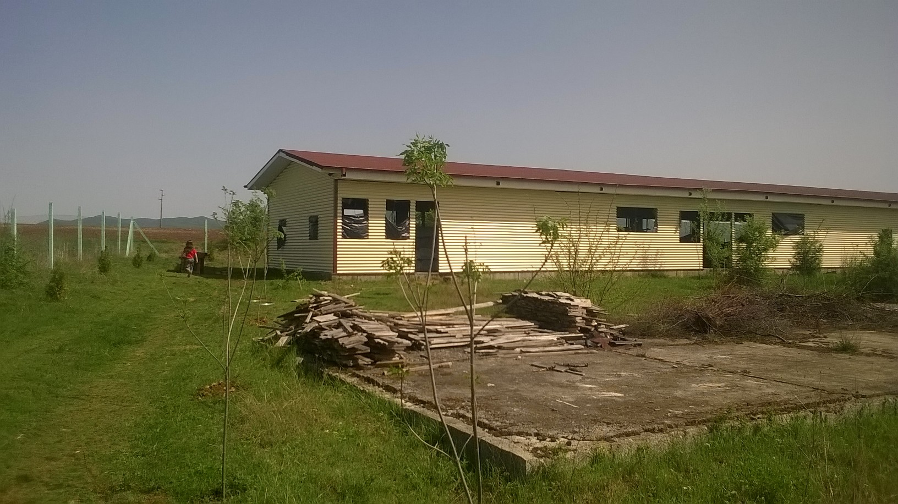
Building
The school has more than 75000 square feet in which there will be an orchard, a vegetable farm, a small zoo and beehives.
The building itself will be a one storey one on about 5000 square feet and is being built up according to all the standards. It will have 5 classrooms, 2 restrooms, a gym, a cafeteria, a teachers' room, a director's room and a physician's room.

Education
The private full day educating school “Beloved Child” will start as a primary school with the perspective in future to functino as a secondary school as well.
The capacity of the school is 40 children – from preschool group until fourth grade – 8 children in a class for more effective education.
The Bible will be taught, the classes will start with a prayer to God and the teachers will be seventh-day adventists.
The school will offer intensive study of English, computers, also opportunities for development of musical talents.

Schedule
The school subjects will be in the morning and in the afternoon there will be an optional daycare. In it the children will be able to choose between a cooking course, sewing, needlework, natural remedies and healthy lifestyle, gardening, orcharding and others.

Food
At lunch children will be able to choose their place between the dining room inside and the pavilion in the fruit garden. The food – tasty and healthy – will be prepared from the products, growing in the school yard, for which they themselves helped – according to their abilities and desire.
About Us

The Dombazyan Family
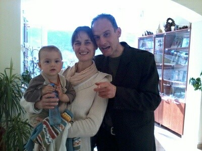
The Tachevi Family
We are Tatiana and Petar Tachevi. We moved from Plovdiv to the village of Medovo in 2011. We bought our house in 2007. What was leading us was God's message to get out of the big cities. Later we realized that God has given many other messages about our lives as well as about the mission of the church. One of these is the message about the education of our children and protecting them from the corruption of the world. The school plays an important part of the right education. But in our days it has become a dangerous place for the physical and moral health of our children. We thank God that we can serve him in many ways. The most important of these is to educate children for God's glory.
We participate in the project "Beloved Child" since almost the beginning and we hope that if God has started it, He is strong to finish it, unless we stand in the way. We believe that God will bless everyone who takes to heart God's institutions - sanatoriums, restourants, health shops, schools, televisions and publishing houses!

The Petrovi Family
We are the Petrovi family from the town of Ruse. At the end of 2014 we decided to adopt a child. Concerned about his education we started looking for a property in the nature and a school in which the child would be acquainted not only with the school curriculum but also with the Christian values. We prayed and God pointed us to the village of Medovo where such a school was being built. Since we found a proper home for ourselves in a neighboring village we settled here. We desire to help in the building of the school and in the process of education as my wife is a long-experienced teacher who loves children and God.
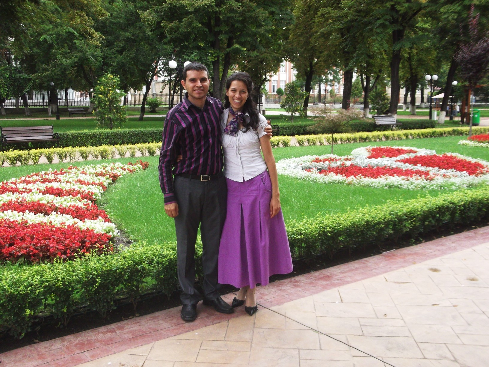
The Marinovi Family
We are Mariana and Dimitar Marinovi. Shortly after our wedding God impressed our minds with the message of leaving the cities. We sold our apartment in Plovdiv and bought a house in the village of Medovo. Then we understood from the Spirit of Prophecy about God's plan to create institutions for the salvation of souls - like the "Beloved Child" project. The right education and teaching has salvational significance! An advantage to the project would be also that soon right next to it would open a micro health center - the project God inspired my wife and I to start. There the children could see in practice God's program of healing. We believe the "Beloved Child" school will soon open its doors. Amen!
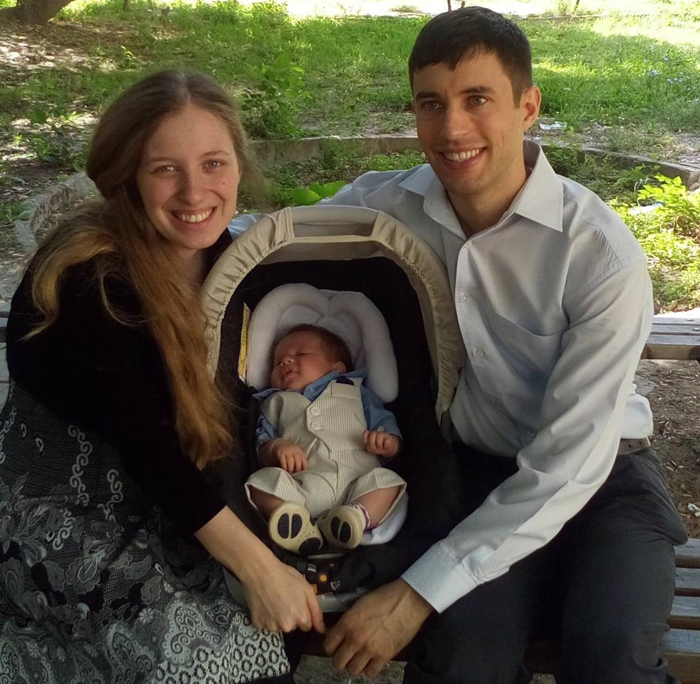
The Peychinovi Family
We are Vili and Mitko Peychinovi. Studying the Spirit of Prophecy we have always wanted to move to the country. We wanted to be closer to God and nature and farther from the noise of the polluted city. And now as parents we want to raise our children in the best possible environment.
So after many months of searching and prayers we felt that God is leading us to the village of Medove. We bought a place there and hope to move in soon.
We support the "Beloved Child" school project and hope to be able to help more as we get there.
We believe that it would be a great blessing for everyone involved - children, parents and teachers.
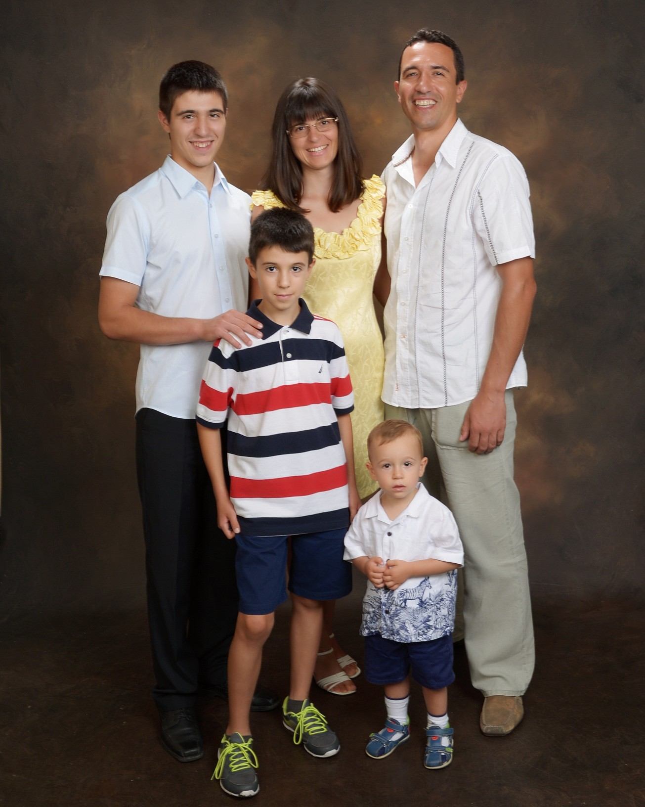
Venica Angelova
My name is Venica Angelova and I live in the city of Plovdiv. As a mother of three - my first two studying in state schools - I want to share my desire that my third child would study in the "Beloved Child" school.
There is a battle going on for the souls of our children and I see how they are attacked day after day by their surroundings in school, by the theories that they study their - and which go against our Christian beliefs. As a result their minds are confused - and this in the age when their value system is being built - it is not established yet as with us adults. We teach them the truth at home and when they go to school they are being taught lessons containing lies. Are we not thus putting our children in a trap? And then we ourselves suffer witnessing the results - what our children are tranforming into, how much they imitate the world and its customs! Is it worth risking their salvation?
Until now in Bulgaria we haven't had the privilege to have our children study in a school that lifts up God's principles. Are we going to take advantage of the rich blessings that God longs to bestow upon our children and upon us - their parents - through the "Beloved Child" school?

Stoyan Stoyanov
My name is Stoyan Stoyanov and I believe God’s desire is for many such schools to exist and I would gladly help in building these.
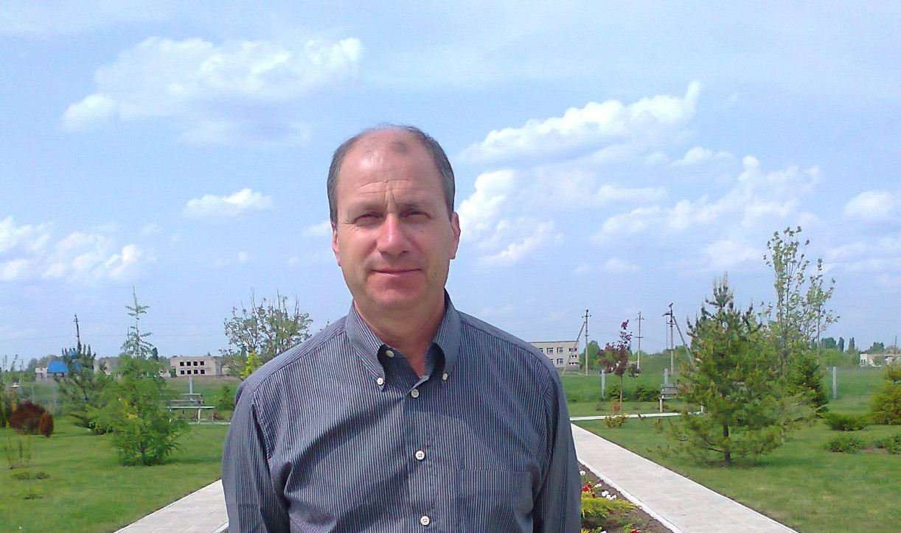
Zhan Tachev
My name is Zhan Tachev. I am 53 years old, a member of the SDA Church in Plovdiv. With great joy God motivated me to take part in the establishment of the first school in Bulgaria governed by Adventists. God loves children and desires their salvation. It is of vital importance to protect them from the influence of the world and place them close to nature. Although my own children are already grown up I realize the need of such centers of education. I support this enterprise and believe that God also supports it with the guidance of the Holy Spirit. You can support it as well!
Development
In the past several years we’ve been seeing how with God’s help and with the help of many followers the project of the school continues to grow. Dozens of people opened their hearts and dedicated to this noble cause voluntary work, others made donations, and many others are praying for the project.
Already done
- A plot has been bought
- A fence has been put
- Fruit trees have been planted
- The metal construction of the building has been built
- The roof has been completed
- The walls have been built
In progress
Next steps
- Windows and doors to be set

- 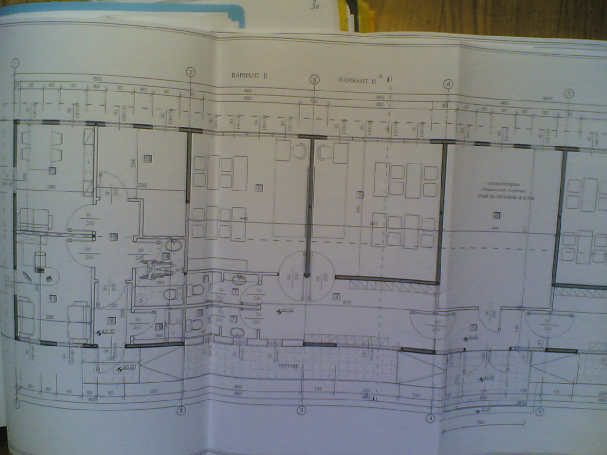

- 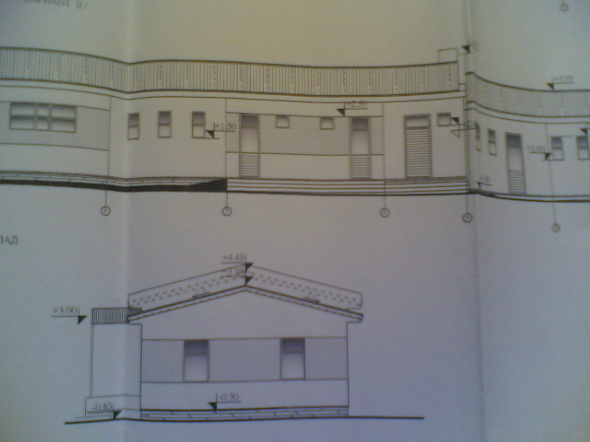
- 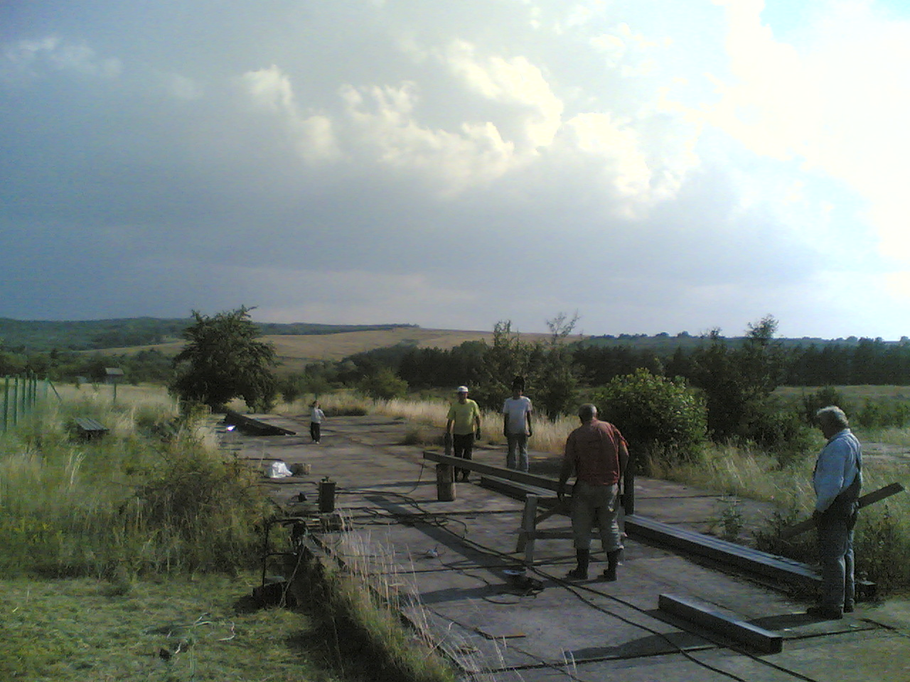


- 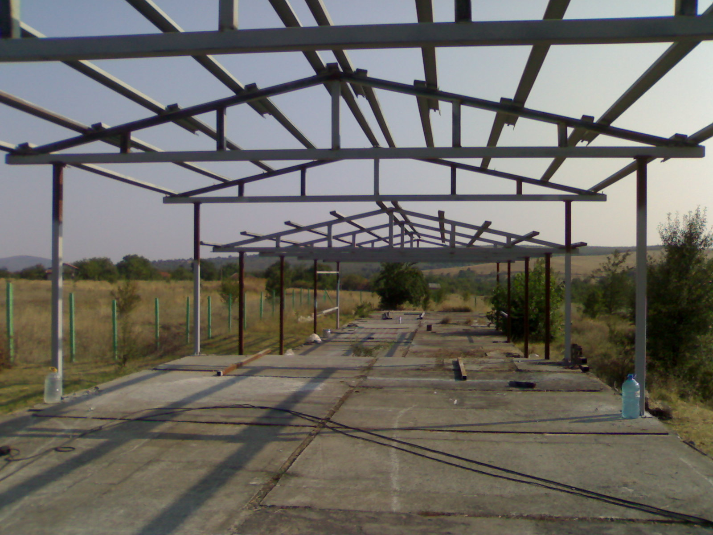


- 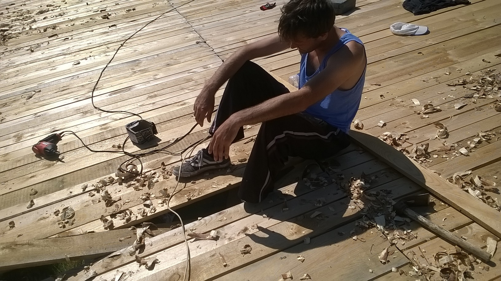


- 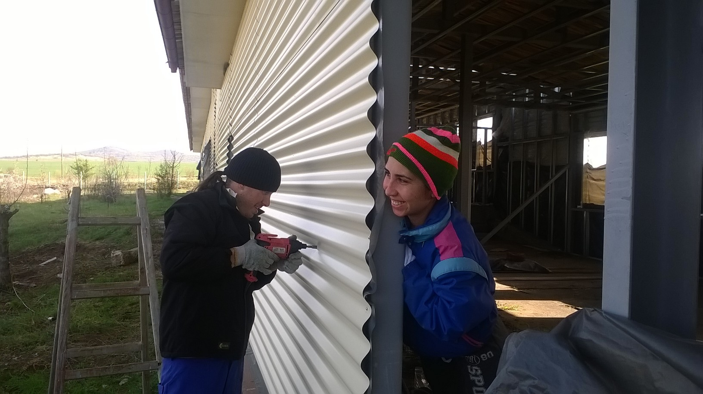
- 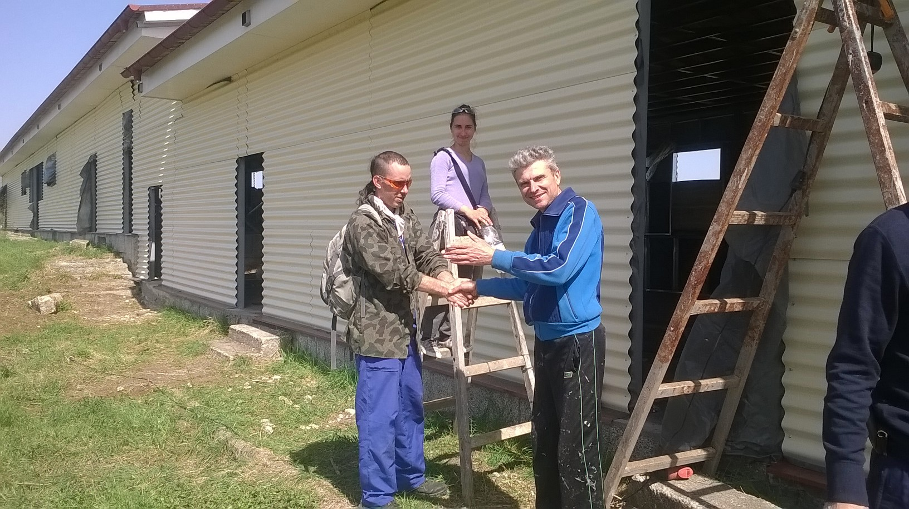


- 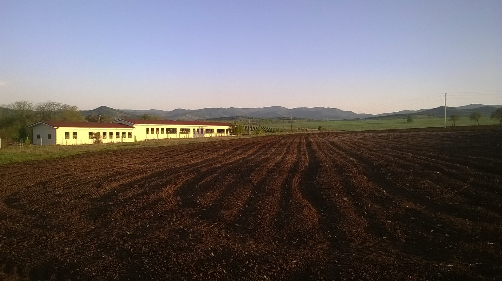
- 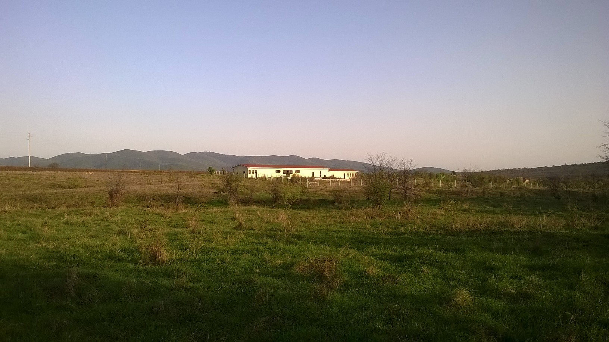
Below you can read more about the story behind the school.
Adventists and the village of Medovo
Twenty-five years ago some adventist families were inspired by God's word through the message about going out of the noisy, dirty and corrupt towns. So the second biggest city in Bulgaria named Plovdiv decreased its population with several families. This group of Adventists prayed earnestly and settled in a beautiful, pure and peaceful place. Surrounded with hills, rivers, forests and fields – listening to birds' songs instead of noisy cars, smelling the fragrance of roses and herbs instead of the smoke of factories and machines. They were closer to God's creation and far from human inventions. They faced a lot of challenges as Abraham has in his life. Trusting in God and by faith they left their fathers' home. Some of them later went back to the city, but most of them put the fundament of their new homes and a new life style – closer to God and to heaven. The village Medovo became their new home. Several native families were converted and so was founded the new church.
History repeats itself
After 15 years the history repeated itself. At the end of 2006 several young families were praying and looking around – just as the first ones. After one year of searching for a place and even paying deposits God closed all the other “doors” and pointed in a direction they didn't know. But God knew it – it was the village of Medovo. This place become a prayer requesting point and was examined by the young Adventist families. This process continues today as well.
Education and encouragement
God moves them to study and they pray for God to use them in two directions – EDUCATION AND MEDICAL MISSIONARY WORK. They have visited different SDA institutions where they could study. God has showed them how He can lead them and do miracles for children and adults. In 2011 one of these families - of the first young settlers in Medovo - travelled to Herghelia at the OCI reunion camp. Before that time they had spent much time in prayer asking God about His plan for their child and their service. They were asking where should God's children live. When they were in Herghelia they heard a lot of experiences. They met Dr. Moroshan and his wife and saw how God had used them to open an Adventist school – although there were only 4 children in the beginning. But God had blessed their efforts and other families joined the project. Meanwhile some brothers from the USA helped them. At the moment there is a school with 120 children. The school bus travels through villages and cities and the children gather in the school every day. “Let the children come …” Praise God!
In search for a place
When this Bulgarian family came back home they shared what they had heard and seen in Romania. They reread the message in Selected messages volume 6: “Go out of the cities as soon as possible. Work as earnestly as if you work for your own salvation”. Supported by parents living in the city and ready to send their children to an Adventist school, they started looking for a place for a school. This would be the first Bulgarian school with Adventist teachers who love God and the children. They were going by cars and bikes, praying and looking for a proper place and asking God to show them where is the best location.
The place should be peaceful, beautiful and far away from the big city. Finally they saw a place at the end of their village – 7000 square meters – a land surrounded by mountains and hills, fields and forest, streams and rivers. The place had all the right features.
First challenges
And then the authorities said that the land belongs to the municipality and unless the people give their permission, it couldn't be sold. That was a challenge, but God says: “The battle is mine”. After a lot of praying to God all the local people agreed for the place to be sold. Praise God!
The next challenge was that we needed to pay 1000 euros just to participate in the auction, but we only had 250 euros. God provided for this need not through friends, but through a stranger.
Then the richest man in the land said that he wants to buy the place for himself. We started praying again and asking God if it is His will that He may open the doors, and if not – that He may close the doors. After not many days the rich man came to us and said: “Take it, I'm not going to compete with you.”
Thousands ... in the last moment!
So the day came and we went to the auction and indeed we were the only ones there. And now the bigger “mountain” came in sight - the total price was 12,500 euros and we had to pay the remaining 11,000 euros in 30 days – and we didn't have any money. We decided to sell a small apartment in the city and use the money for this. But this wouldn't happen as quickly as needed. So we prayed if it is God's will that He will move brothers and sisters to lend us the sum until we sell the apartment. But the days flew and when the last day came we only had 3000 euros. On the last day God moved some people and the sum we gathered rouse to 9000 euros. Yet it was 5 PM and were lacking not 2 euros, but 2000 euros! And then the GSM rang and a friend asked: “How much do you have? As a sister just gave 2000 euros and I'm brining those right now...”. Praise the Lord!
We headed to the bank in the last minute. The person working there was hesitant to stay and make the transaction as it was the end of his working time. But when she heard our story she agreed to do it.
The building project
Now we had to give back the money and come up with a building project. God had a perfect plan for both of these, but we didn't know it.
We couldn't sell our apartment in the city for almost a year but the people who lent us the money were very patient though this was a test of their patience.
We faced challenges with the building project as well. God moved some brothers to finance it. But the enemy is not asleep and the project was decidedly rejected in the municipality. We didn't have the money to pay for the corrections in the project. We were out ouf options; but God says: “I am the Lord and there is no other.”
After 3 months the architect surpisingly called me by the phone and told me that the project is corrected and is now approved! I told him that we don't have the money to pay him, but he said “That's OK. I don't want to be paid for this.”
Building together
Soon after our property was sold and we gave back to our brothers their money. With the rest of the sum – about 7500 euros we started the construction of the building. The capacity would be 40 children – separated by 8 in a class, so it would have 5 classrooms, a teachers' room, a director's room, a physician's room, a kitchen, a gym and a place to eat.
During the summer of 2013 about 20 people were working on it together – under the bloodstained banner of Emanuel. I think God was very happy at the time! Most of us were from the local church. Some families opened their homes to accommodate the volunteers from the other places. One family prepared the food, another one provided the electricity. Professionals builders also came to help. God had prepared everything!
It wasn't without difficulties though - it was very hot, we didn't have water in some homes, but nobody complained. An elder brother who had worked on ships was especially helpful and he was encouraging all of us with his positiveness. Two times metal poles fell right near him, but God protected him – and we thank Him! “Do not be afraid for I am with you!” Isaiah 41:10.
And so after a month of intensive work 15 tons of metal was put in place – the skeleton of the building was ready.
A financial drought and the end of it
Then a long period of inactivity came – for 12 months we had no money. Our prayers were “Lord, you started this work – You finish it! We are nothing without You!” Psalm 34:5. And “they looked to Him and their eyes were lit up; and the faces will never be ashamed.”
One evening the person who had bought our city property called us and said: “I heard that you are selling your other apartment? I want to buy it.” We rejoiced in the news. But then he and the notary quarrelled about the notary taxes and he decided not to buy. We were surprised. And we prayed again. A few days later the buyer called us and said that although he won't gain anything he will still buy it. God answered our prayers again!
Working together again
We now had funds and in the spring of 2015 we continued building the school. Meanwhile God had moved some more young families to leave the cities and come to live in the area of the school. They also started helping in the building. Other people from around the contry also volunteered to help. From the youngest – like the teenager who hopes his little brothers may study here – to the oldest – like the elderly brother at the age of 83 who worked daily with us.
God's care continues ...
Now we have the roof finished and are working on the ceiling and the walls. But in the beginning of November 2015 we realized that we are almost out of funds again. We prayed earnestly. „I will lift my eyes to the hills where my help will come from. My help is from the Lord who created the heavens and the earth.“ And on the very next day we got 2 calls from abroad, thousand miles away. Some brothers wanted to help us with funds. Who told them of our need? Who moved them to donate? It was God!
The same God who shortly after that motivated another person to tell me: „We need to pull over and talk about something.“ I said „Can't we talk while driving?“ He said „I see your car has served you faithfully for the last 10 years. But it has aged a lot and weared away. I want to give you 1000 euros to get yourself a new car. And I would give you more if I had, but I don't have more.“ I was out of words. I pulled over the old Opel. I felt the mercy and forgiveness of God in such a measure in spite of our own unworthyness. What a love! Glory be to His name!
We encourage you, brothers and sisters everywhere, to arise and build for the Lord in your local communities! For God will work with you as He is working with us! Amen!